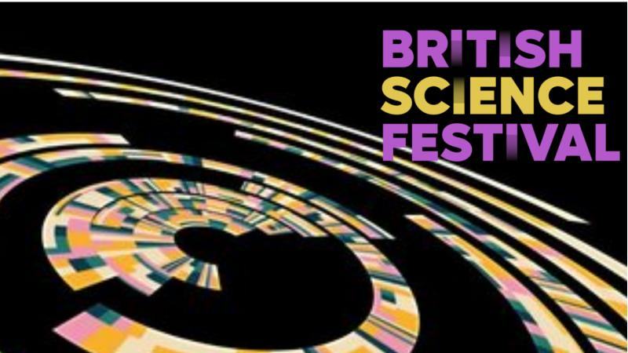
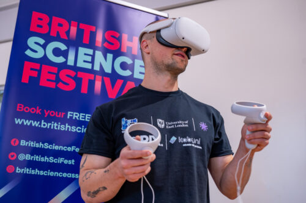

O curta Pulsares, produzido pelo BERG, foi exibido no British Science Festival 2026, em Southampton, no Reino Unido. A produção integrou Matter, Light, Frame, mostra internacional de curtas-metragens artísticos promovida pelo Institute of Physics durante a programação do festival.


Matter, Light, Frame
A mostra reuniu diferentes interpretações da Física por meio da linguagem audiovisual, apresentando trabalhos que exploraram artisticamente fenômenos relacionados à matéria, à luz, ao som, à gravidade e ao espaço.
Descrita pelo festival como uma série experimental e global de curtas, Matter, Light, Frame propôs observar a Física também por meio da criação artística, reunindo diferentes formas de compreensão e interpretação dessa ciência. A proposta convidou o público a refletir sobre uma questão central: “o que a Física significa para você?”.
A mostra aconteceu em 20 de setembro de 2026, no foyer da John Hansard Gallery, em Southampton, com exibição contínua entre 11h e 17h. A atividade integrou a programação do British Science Festival e teve acesso livre, sem necessidade de reserva.
Sobre o Festival
O British Science Festival é um dos mais antigos festivais de ciência da Europa, com origens que remontam a 1831. Realizado anualmente em diferentes cidades do Reino Unido, o evento reúne pesquisadores, artistas, comunicadores e o público em uma programação dedicada à aproximação entre ciência, sociedade e cultura. Ao longo de sua história, o festival esteve associado a momentos importantes da divulgação científica britânica e recebeu nomes como David Attenborough, Brian Cox, Alice Roberts e Maggie Aderin-Pocock.
Em 2026, o British Science Festival chegou à sua 195ª edição e foi realizado entre os dias 16 e 20 de setembro, em Southampton, numa parceria entre a British Science Association e a University of Southampton. A programação reuniu cerca de 100 atividades gratuitas, entre exposições, palestras, instalações, performances e exibições audiovisuais, explorando diferentes formas de aproximar o público da ciência e de suas relações com a sociedade, a tecnologia e as artes.